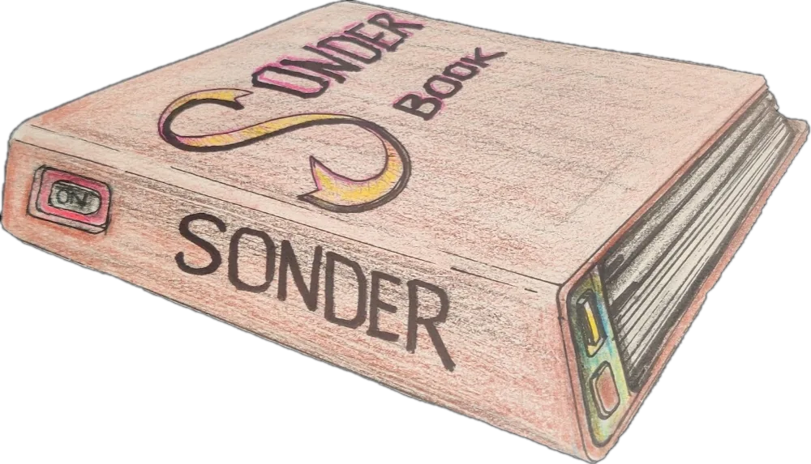

the baseline.
i am a BCA honours student at SICSR in PUNE, originally from NOIDA. my specialization is AIML.
i build intelligent software, but i care deeply about how it holds up underneath. that means designing strict database schemas, functional machine learning pipelines, and respecting hardware-level constraints. i write code in PYTHON, SQL, and C, and i prefer proving that a system works with raw data rather than assuming it will scale.
the brandmark above is the character "Y" set in CLOISTER BLACK. it is a quiet nod to the alias "L" from DEATH NOTE. for me, it represents a specific way of working: methodically, quietly, and letting the engineering speak louder than the developer.
this portfolio is built the same way. it ships zero bytes of JS, relying entirely on native CSS routing. navigate the tabs above to look at the actual work.
LAMPS
the problem
LiDAR generates massive point clouds, but treating all spatial data with equal priority wastes compute. a flat concrete wall ten meters away does not require the same mapping resolution as a moving pedestrian.
the engineering
i built a foveated perception pipeline that reduces processing overhead. the system ingests raw 3D sensor data, clusters and tracks dynamic objects, predicts their trajectory up to 1.5 seconds out, and dedicates high-resolution mapping cells exclusively to those active corridors.
- efficiency: reduces cell computation by 16% compared to fixed-resolution baselines.
- tracking: maintains constant-velocity trajectory predictions with a 0.457m mean error margin at peak horizon.
- stack: built entirely in PYTHON, relying on NumPy and SciPy for structural logic.
PARKPAY
the problem
booking systems fail when state management is sloppy. if two drivers tap "reserve" on the same parking slot at the exact same millisecond, a naive backend will grant the slot to both, causing a physical collision.
the engineering
i architected the backend database schema to ensure absolute data integrity. by utilizing strict ACID compliance and transaction locks, the reservation flow remains honest. the system parses real-time availability, locks the row during the transaction, and rejects concurrent conflicting writes.
SONDERBOOK
the research
i researched whether a paper-like e-reader could actually be manufactured affordably and monetized effectively. instead of assuming a market fit, i built a component-level cost model in PYTHON and Excel to benchmark manufacturing constraints against the Kindle ecosystem.
the design
SONDERBOOK was conceptualized to enhance the reading and writing experience via a hybrid screen-page combination, proving that physical hardware viability must be calculated before writing a single line of consumer software.

deploy me.
i am looking for strict, high-yield internships and early career roles in AIML, data, and backend systems.
- email: yugamakharia@gmail.com
- github: github.com/YUG4M
- linkedin: linkedin.com/in/yugamakharia